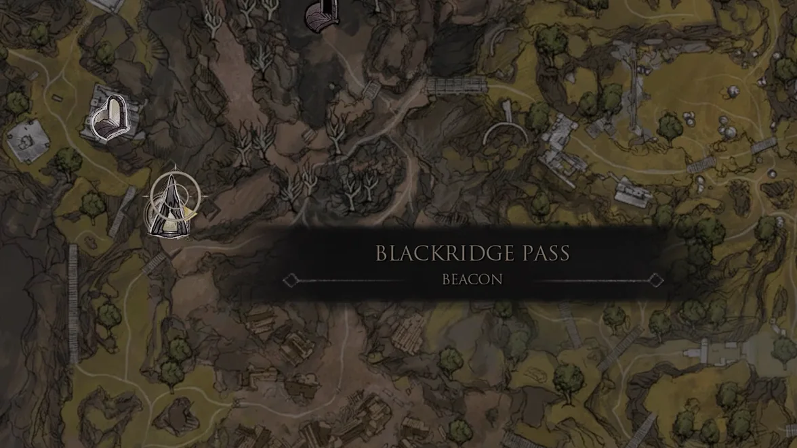
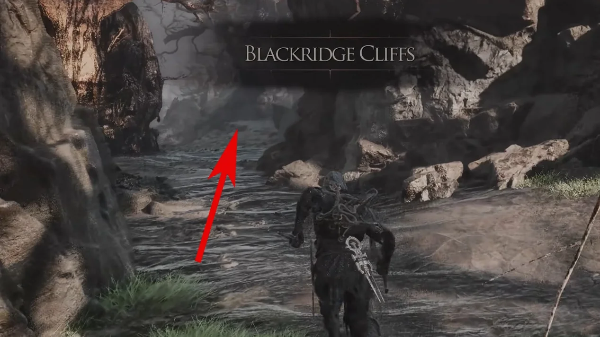
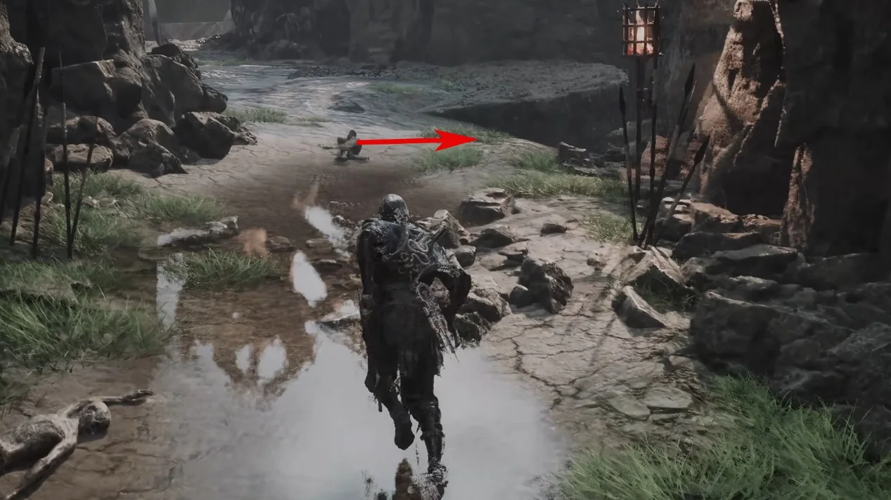
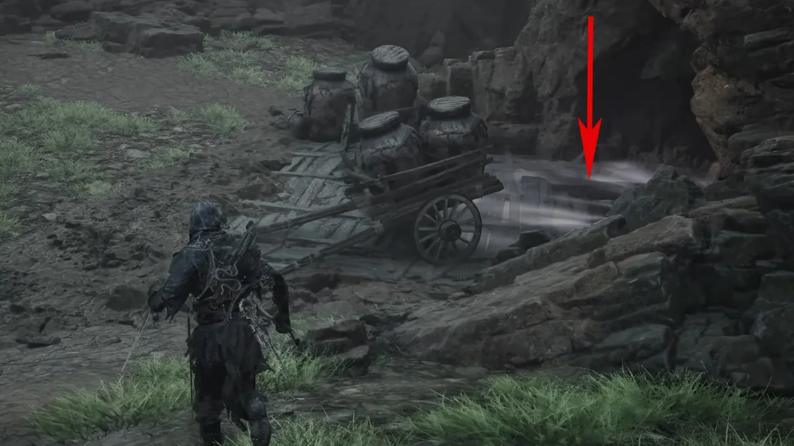
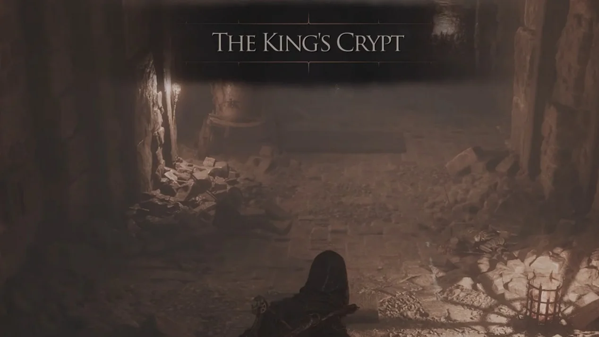
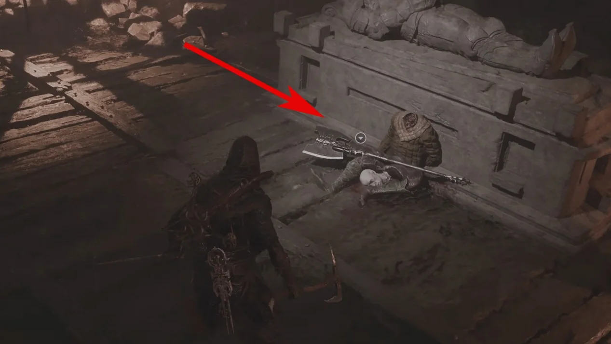
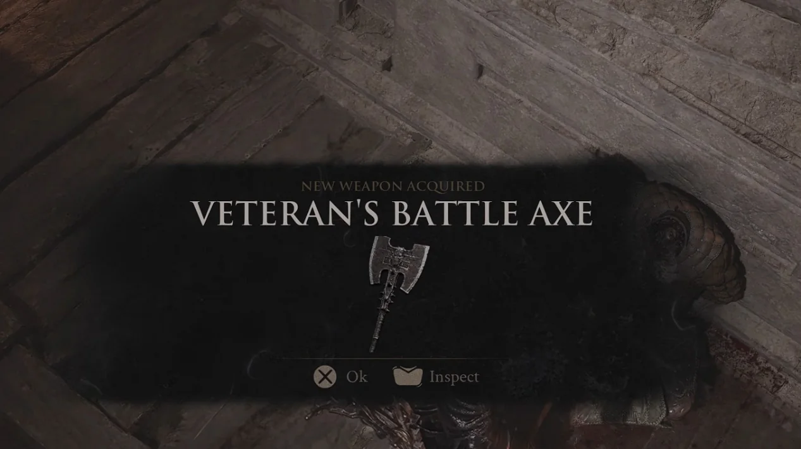

Primary weapon acquisition · Fainweald
How to get
Veteran's Battle Axe
Follow this captured route from Blackridge Pass Beacon to obtain Veteran's Battle Axe.
- Region
- Fainweald
- Starting point
- Blackridge Pass Beacon
- Base damage
- 38

Route 01Travel to Blackridge Pass Beacon.
Route 02Move forward into Blackridge Cliffs and follow the route to the left.
Route 03Continue until the marked right-hand descent.
Route 04Enter through the opening at the bottom.
Route 05Reach The King's Crypt and follow it to the end.
Route 06Defeat the enemies in the final room and locate the headless body on the floor.
Route 07Collect Veteran's Battle Axe from the body.